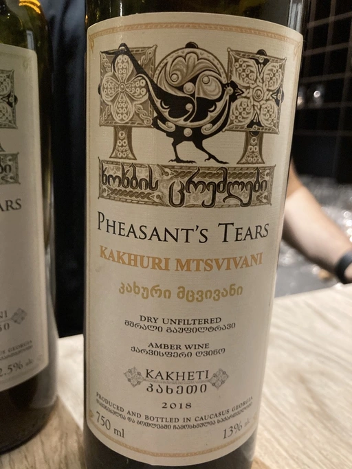

- Type
- White Still, Dry
- Producer
- Pheasant’s Tears
- Vintage
- 2018
- Location
- Georgia, Kakhetia
- Grapes
- Kakhuri Mtsvivani
- Alcohol
- 13
- Sugar
- 1.75
- Price
- 615 UAH
- Cellar
- N/A
Ratings
2020-10-12 - 6.00
I was sitting there, all alone with a glass asking myself, where did I hear this aroma? But then I realised, rich vegetable soup where 50% of content are various spices. The taste is different though, completely rotten apricots. Well, Pheasant’s Tears is a crazy producer after all.